| formula | syntax tree |
|---|---|
| p | |
| ¬P | 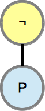 |
| P∧P | 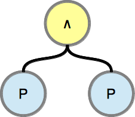 |
| P∨P | 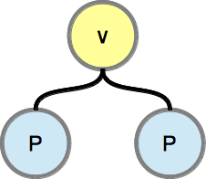 |
| P→P | 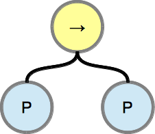 |
A graphical representation of a propositional formula is the syntax tree. A syntax tree directly mirrors the used grammar rules and can be drawn recursively.
The syntax tree for a propositional formula and its sub-formulas.
| 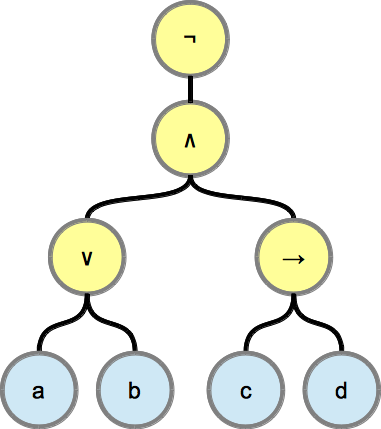 | ¬((a ∨ b) ∧ (c → d)) |

|
(a ∨ b) ∧ (c → d) |
| 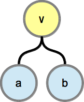 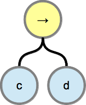 | a ∨ b, c → d |
| 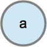 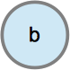 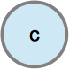 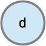 | a, b, c, d |